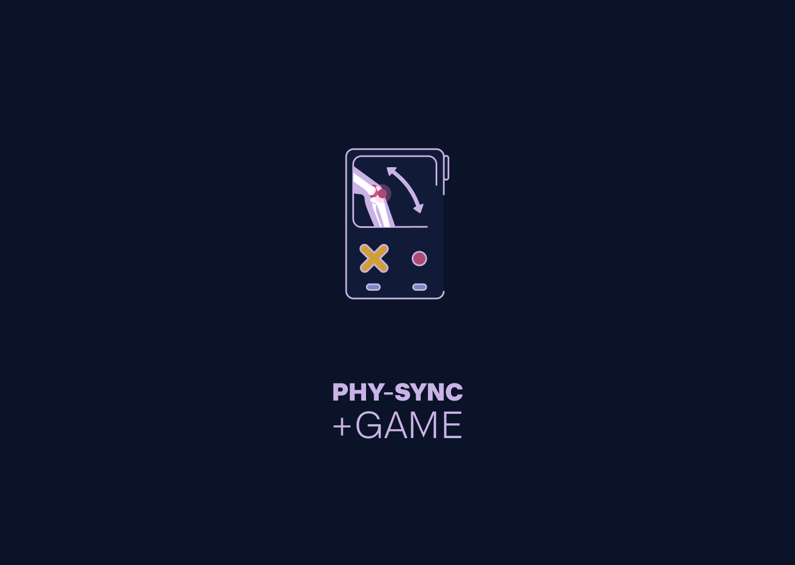
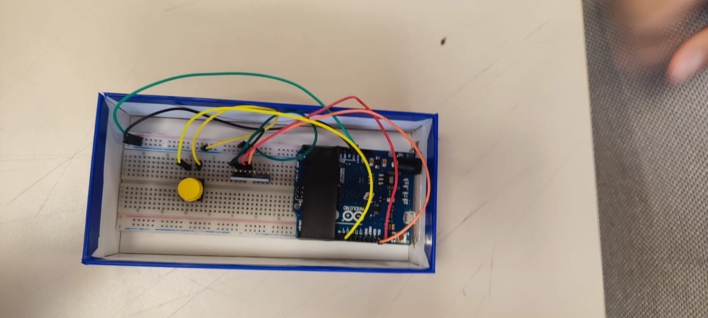
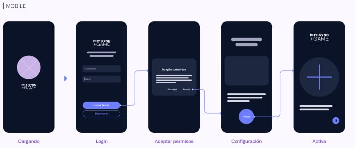
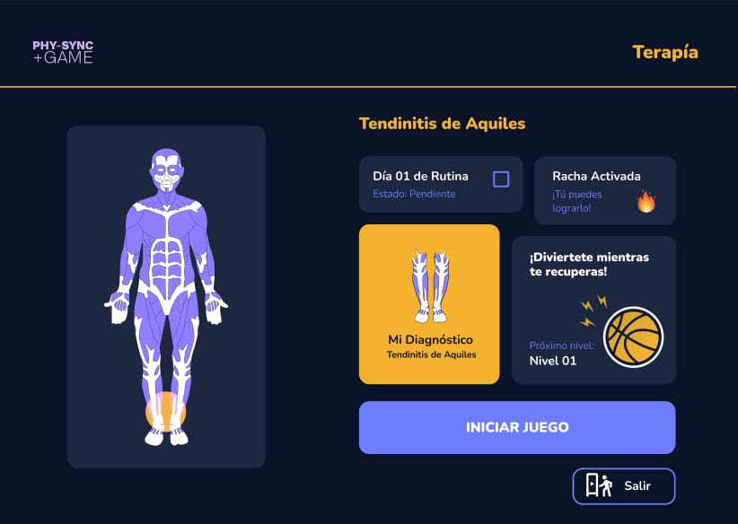
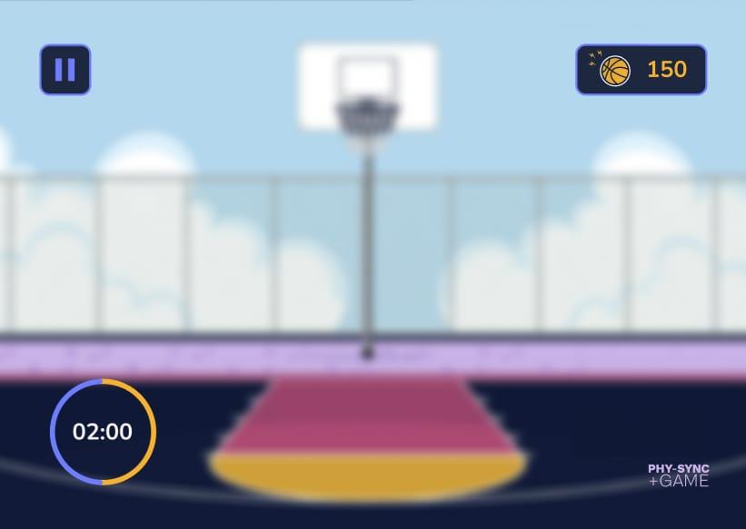
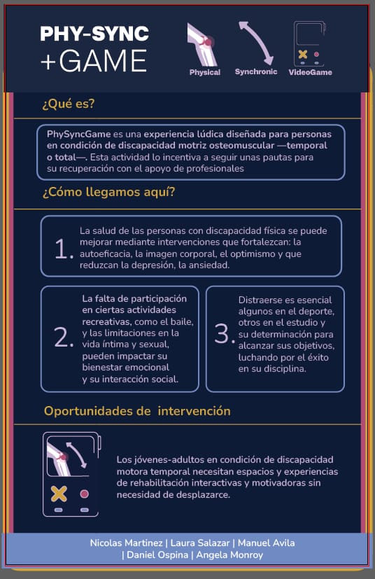

Videojuego AR de rehabilitación motriz — tu cuerpo real, capturado por cámara y una red neuronal de pose 3D, es el control del juego. Sin hardware adicional.

Nos propusimos diseñar una integración real entre lo físico y lo digital para personas en condición de discapacidad motriz osteomuscular —temporal o total—, donde la falta de espacios y hardware accesibles limita el ocio, el deporte y la rehabilitación.
Los jóvenes-adultos en condición de discapacidad motora temporal necesitan espacios y experiencias de rehabilitación interactivas y motivadoras, sin necesidad de desplazarse.
— Oportunidad de intervención, research del proyectoAntes de llegar al diseño final exploramos varias referencias de estimación de movimiento: Kinect, los mandos de Wii, y juegos como Wii Fit y Ring Fit Adventure. De ahí nació el nombre del proyecto: un control físico (Arduino) sincronizado con seguimiento digital del cuerpo por cámara.

El control físico — Arduino armado sobre una maqueta de cartón, construido por otro subequipo.
En paralelo, una red neuronal de estimación de pose 3D (VNect, 24 puntos de articulación) corre en tiempo real sobre Unity Barracuda a partir de la cámara del dispositivo, siguiendo el movimiento del cuerpo del jugador. Mi rol fue el desarrollo completo de Unity y AR: el pipeline cámara → Barracuda/VNect → mecánica de juego, además de la implementación de las pantallas de interfaz (UI diseñada por Angela Monroy). El control Arduino lo armó otro subequipo.

Flujo de onboarding — login, permisos de cámara, configuración y activación.
La app diagnostica la condición del usuario (por ejemplo, tendinitis de Aquiles) y organiza la recuperación como una rutina diaria con racha, no como una lista de ejercicios. Cada nivel es un minijuego — el primero, básquetbol — que el jugador controla con su propio cuerpo, detectado en tiempo real por la cámara.
Demo del MVP en funcionamiento.


Diagnóstico + racha diaria (izq.) y el minijuego de básquetbol (der.).
Pruebas con usuarios reales:
Prueba 1 — entrega y conexión del control Arduino, y una usuaria jugando con su cuerpo sobre el tapete.
Prueba 2 — el juego corriendo en el laptop, siguiendo el movimiento del jugador en tiempo real.
MVP funcional con un nivel completo jugable, validado con usuarios reales en sesiones de prueba. El control físico (Arduino) y el pipeline cámara → Barracuda/VNect → Unity funcionan sincronizados de punta a punta.
Todo el proceso —problema, research, iteración y solución— condensado en una pieza.

Click para ver completo.